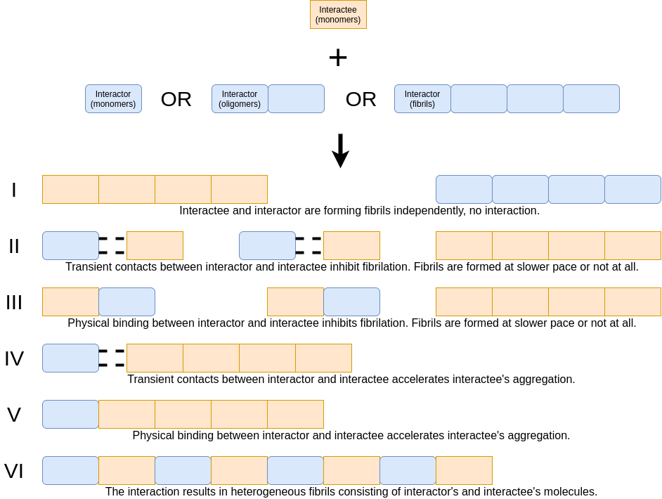

definitions.Rmd
We assume that six main scenarios can occur during the interaction of two amyloid proteins (see the figure above). The scenarios are discrete but rather points of the continuum (e.g., depending on the concentration of the interactor we can have no effect or acceleration of the fibrillization). Therefore, we do not imply that each interaction follows strictly one of these scenarios, but rather presents most dominantly one of them. To distinguish between these interaction scenarios we design three descriptors (described below). Descriptor 1. differentiates between scenarios I (no effect on kinetics) II and III (inhibited aggregation) as well as IV, V and VI (acceleration). Descriptor 2. discriminates between scenarios IV and V/VI. Descriptor 3. differentiates between scenarios V and VI.
For example, if descriptor 1 is faster aggregation, descriptor 2 - yes, direct evidence and descriptor 3 - yes, they describe cross-seeding.
General remarks: this descriptor is fully based on the kinetics or any kinetic data. Here, we mean aggregation to the level of mature fibril (fibrillization) confirmed by e.g., microscopy images. If the interactor accelerates the speed of the oligomer formation, but they never aggregate into the level of mature fibrils (fibrillization does not occur), it is not an acceleration as we understand it. The commonly used technique here is Thioflavin T (ThT) assay [CITATION NEEDED]. We are aware of the fact ThT is not always quantitative, i.e. a higher (or lower) ThT level - under different conditions (e.g. the presence of the interactor) - can be caused by changes to the fibril structure rather than the amount of fibrils, but for the purpose of simplification, we are ignoring it and always follow the interpretation of authors.
Comparison of ThT curves.
Name of the amyloid protein: was chosen from a list of available names. Every protein on the list has confirmed amyloid-like properties. Sequence: The sequence is a vector of amino acids.
Source sequence: here we provide the sequence of an original protein by its uniprot ID: The AmyloGraph database treats as a single protein a protein that can occur in many taxonomic variants or after modifications (e.g., we have human and bovine precursor albumins, P02768 and P02769 as well as the products of the post-translational modifications, Q56G89).
The source sequence may be not identical to the interactor’s or interactee’s sequence. However, interactor or interactee might be a part of the source sequence (as human Amyloid beta 1-40 is a part of the P05067) or a mutated variant of a source sequence (when some amino acids are altered compared to the original sequence).
If the sequence of the interactor or the interactee contains modified amino acid residues (e.g., phosporylated), we do not supply this information in the sequential data.
We started our manuscript collection on amyloid-amyloid interactions by defining the eligibility criteria. We have focused on original experimental results of amyloid-amyloid interaction studies in vitro published after 2020. We have analyzed 24 manuscripts in our in-house collection of publications as a starting point. Next, we have expanded our search by repeatedly adding manuscripts cited by manuscripts in our collection or referencing manuscripts in our collections. The final collection had 364 manuscripts.
During the step of collecting publications, we limited our scope by imposing following rules:
We curate the information in collected publications using a two-step procedure: initial curation and validation. Dedicated forms support both initial curation and validation.
During the initial curation, a curator reviewed all interactions described in the manuscripts and annotated them considering three AmyloGraph descriptors (described in the section XYZ). Moreover, we collect information on the sequence of amyloid proteins involved in the interaction.
Controlled vocabulary: list of possible amyloids: The list of amyloid proteins considered by us is available here.
During this procedure, a curator has independently reviewed the reported interaction record. The semi-random assignment procedure ensured that the curator who validated a specific record was not involved in its initial curation. Dedicated forms (schemes available in the supplementary materials) supported both initial curation and validation. The final list covers 863 interactions from 180 manuscripts.
We consult the final result of the validation with the authors of manuscripts reporting given interactions.
Looking for the current e-mail of the corresponding author. If there is no contact with the corresponding author or they passed away, we looked at other authors.
130 - deceased (3) In the case of more than two corresponding authors, we take the last author.